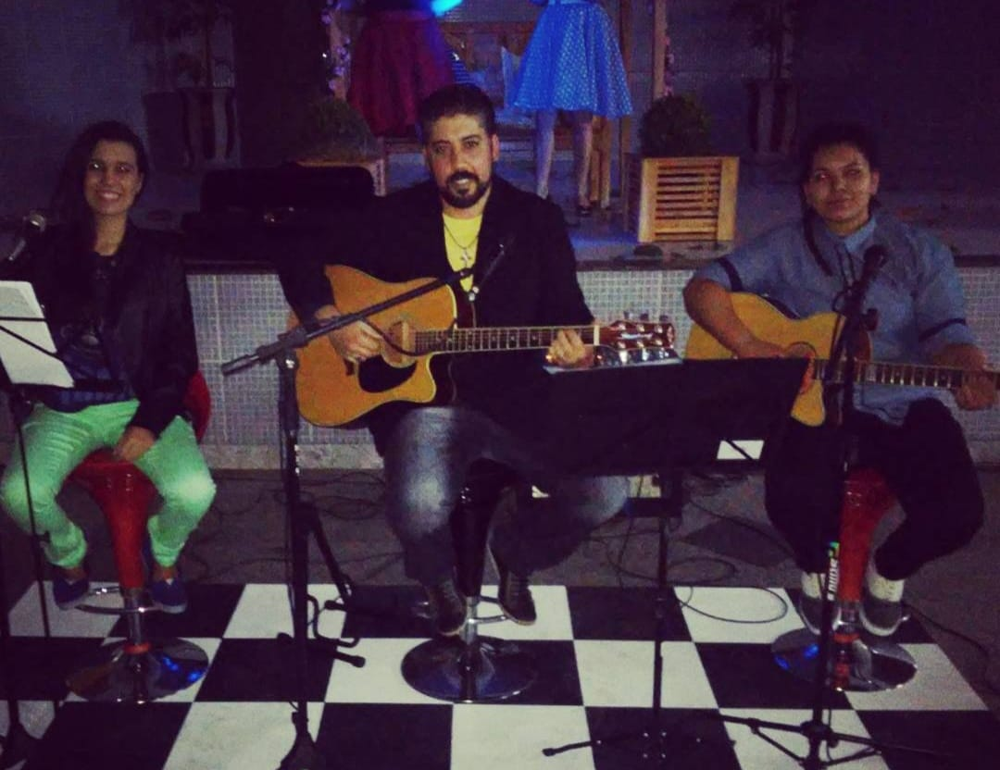
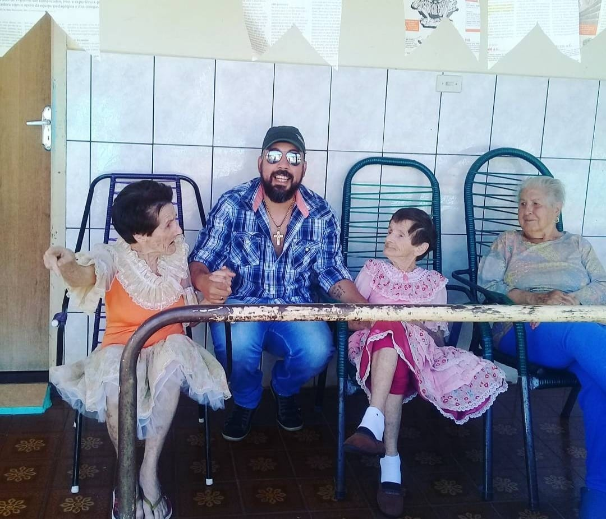
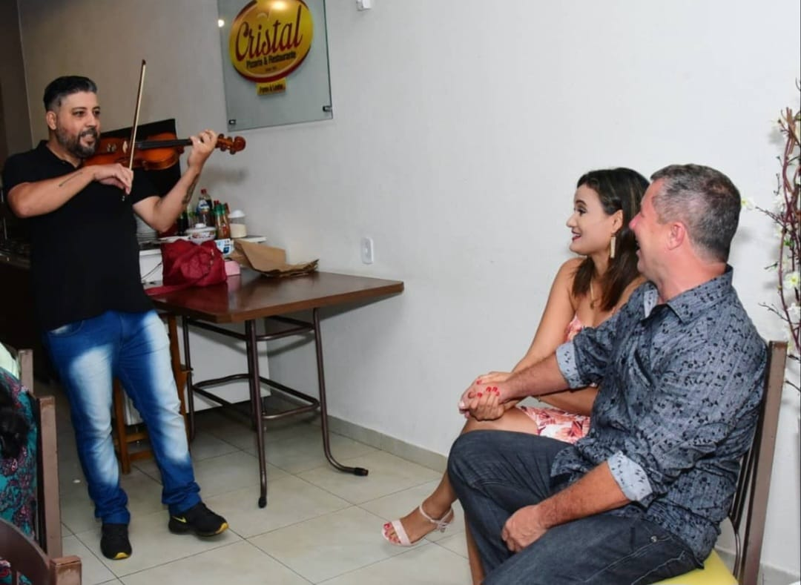
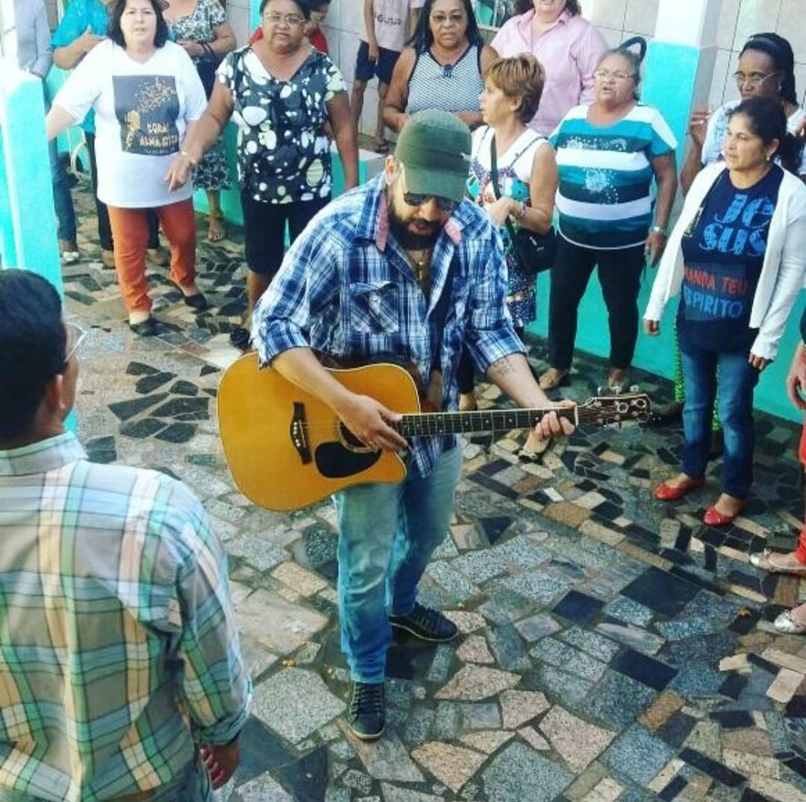
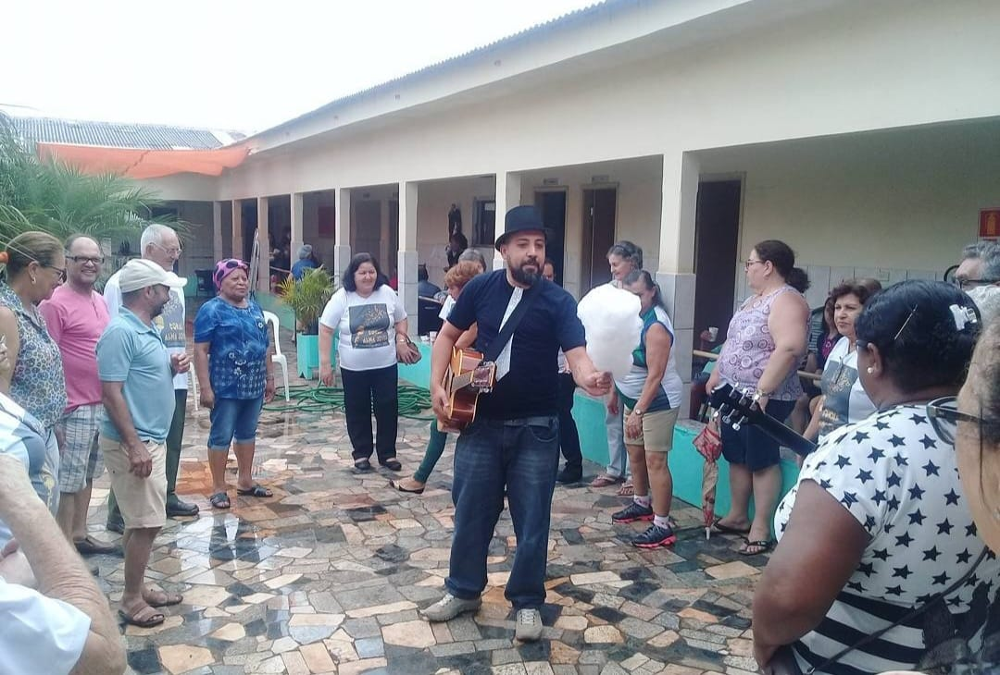
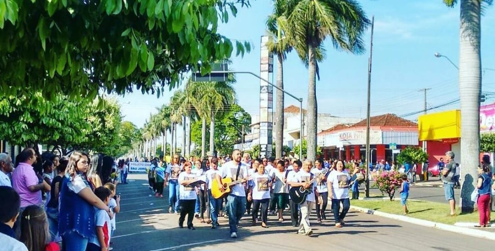
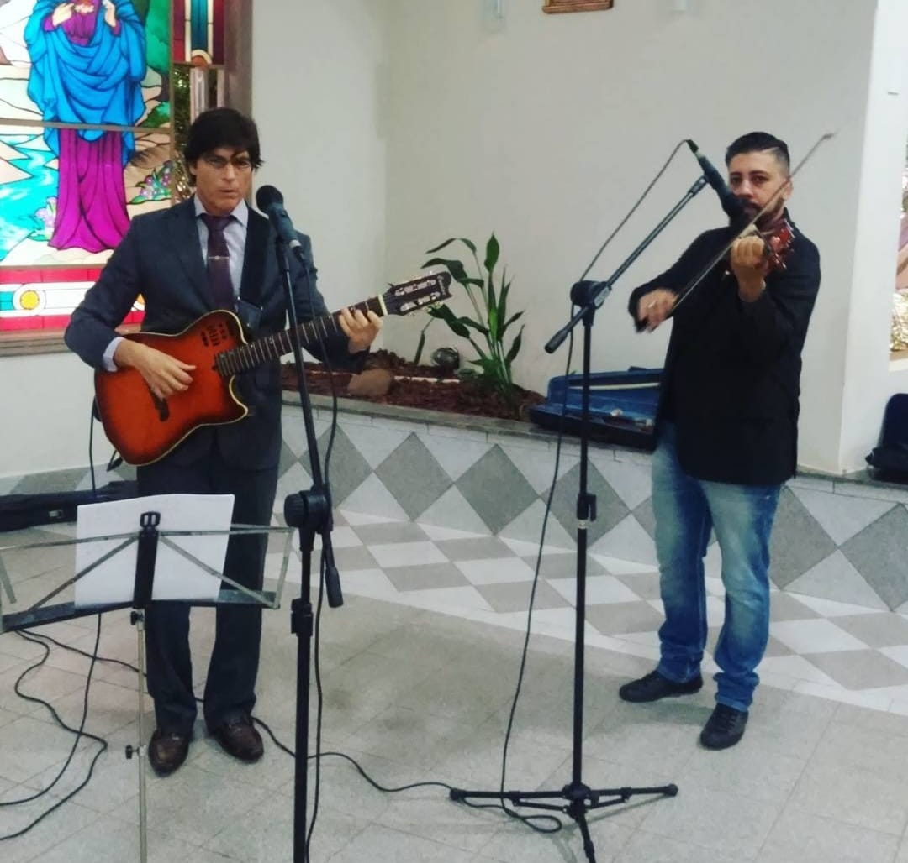
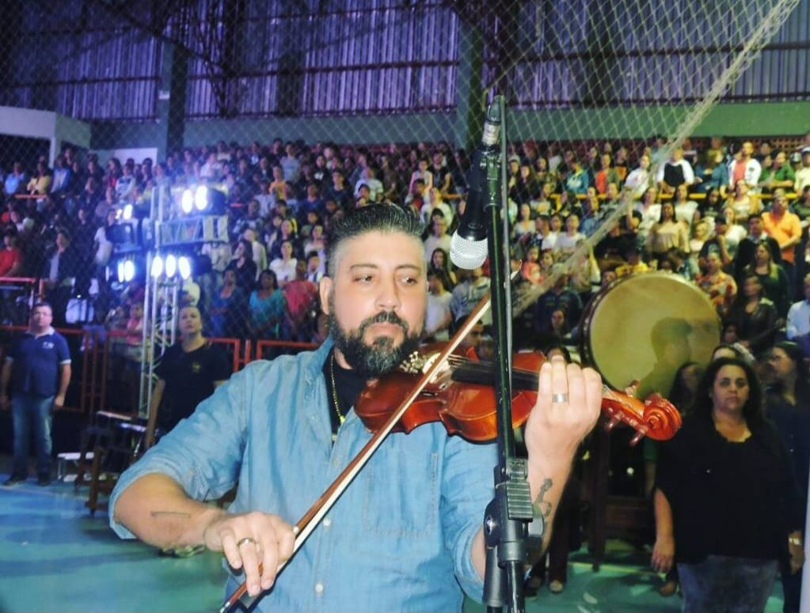

"12 anos expressando a alma"
Desde os 4 anos, a música faz parte da sua vida. Cresceu em uma família de músicos, com forte influência do avô violinista e da avó organista.

Muito antes da carreira profissional, a motivação já era clara: a música sempre esteve presente como expressão, tradição e propósito.

Aos 12 anos, começou a auxiliar no ensino de música na igreja, despertando desde cedo a paixão por ensinar e compartilhar conhecimento.

Após um período afastado, retomou sua trajetória em 2013, trazendo ainda mais maturidade e dedicação à sua prática musical.

Em 2014 voltou a dar aulas e, em 2015, iniciou sua atuação profissional como músico e professor.

Atuou com grupos corais ao longo dos anos, incluindo a criação do “Coral Alma Jovem”, no Paraná.

Hoje integra a orquestra de sua igreja e leciona para o “Coral Arandu”, em São Paulo, em um projeto voluntário no CEU Quinta do Sol (Centro Educacional Unificado, espaço de educação e cultura).

Também atua como professor em escolas da rede pública, contribuindo para a formação musical de novos alunos.
